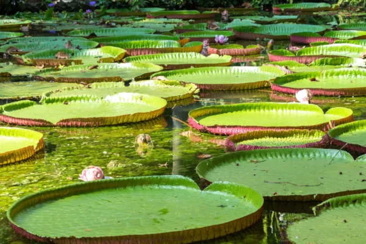

Bioma Amazônia
A Amazônia é uma vasta e exuberante floresta tropical que se estende por mais de 5 milhões de quilômetros quadrados, principalmente no Brasil, mas também em outros países da América do Sul. Conhecida como o "pulmão do mundo", ela regula o clima global ao absorver dióxido de carbono e produzir oxigênio. Sua biodiversidade é impressionante, com milhares de espécies de plantas e animais, muitas das quais ainda são desconhecidas. Além disso, abriga comunidades indígenas que têm conhecimentos profundos sobre a floresta e sua preservação. Contudo, a Amazônia enfrenta sérios desafios, como o desmatamento e a exploração ilegal, ameaçando sua integridade e a saúde do planeta.

Fauna
Pesquisas indicam que na Amazônia existem cerca de trinta milhões de espécies animais. Dá para acreditar? E isso porque nem todas as espécies foram encontradas e estudadas pelos cientistas. Lá existem alguns animais que ainda são desconhecidos pelos homens.Bom, mas uma coisa é certa: são muitos animais convivendo neste grande ecossistema. Talvez, os mais famosos deles sejam os macacos. Eles são numerosos: coatás, guaribas, barrigudos, entre outros. Uma infinidade de primatas pode ser encontrada nos galhos das árvores amazônicas. Além deles, existem outros mamíferos característicos da região. São mamíferos terrestres, como onças, tamanduás, esquilos, e mamíferos aquáticos, como peixes-boi e botos.
Os répteis também têm território garantido. Em um passeio pela região podem ser vistos lagartos, jacarés, tartarugas e serpentes. Entre os anfíbios, existem variados tipos de rãs, sapos e pererecas. Uma grande coleção de peixes é outro fato digno de nota: nas águas amazônicas estão 85% das espécies de peixes de toda a América do Sul. Todos os anos milhares deles migram tentando encontrar locais adequados para reprodução e desova. É o que se chama Piracema.
Outros seres ainda menores, têm grande importância no equilíbrio deste ecossistema: os insetos. Eles estão na terra, na água e no ar, exemplo: besouros, formigas, mariposas e vespas fazem parte do grupo que é maioria na fauna amazônica. Há também grande variedade de aves na floresta, como por exemplo, araras, papagaios, periquitos e vários outros. Um deles, são os tucanos que colorem as copas das árvores. Mais de mil espécies de aves já foram catalogadas.
Animais da fauna:
Onça Pintuda
A Onça-Pintuda (Panthera onca) é o maior felino das Américas e um predador de topo crucial para o equilíbrio ecológico do bioma Amazônia. Com uma pelagem dourada com manchas negras únicas e uma mordida poderosa capaz de quebrar ossos, ela habita florestas tropicais densas e áreas variadas. Predominantemente noturna, alimenta-se de mamíferos, aves e peixes. Classificada como "Quase Ameaçada", enfrenta ameaças como desmatamento e conflitos com humanos. Esforços de conservação incluem a criação de áreas protegidas e corredores ecológicos.Culturalmente significativa e atraente para o ecoturismo,a Onça-Pintuda é um símbolo vital da biodiversidade amazônica.
boto-cor-de-rosa
O boto-cor-de-rosa (Inia geoffrensis) é o maior golfinho de água doce,
encontrado principalmente nos rios da bacia amazônica. Caracterizado porsua
cor rosada, que varia com a idade e o ambiente, ele possui um bico longo
adaptado para capturar uma variedade de presas, como peixes e crustáceos.
Solitário por natureza, mas às vezes visto em pequenos grupos, o boto-cor-de
rosa é cercado por lendas na cultura amazônica, sendo associado a mitos de
trans formação.Apesar de protegido, enfrenta ameaças como a degradação do
habitat, poluição e captura acidental, o que torna crucial sua preservação
para manter o equilíbrio dos ecossistemas aquáticos da Amazônia.

Vegetação e flora da Amazônia
Amazônia abriga a Floresta Amazônica, considerada a maior floresta tropical do mundo,abrangendo uma área de mais de 5 milhões de km2. A floresta conta com um elevado número de espécies (animais e vegetais), é então, rica em biodiversidade. Avegetação, de maneirageral é caracterizada por uma floresta densa e pela presença de árvores de grande porte. O bioma possui cerca de3.650.000 km² de florestas contínuas. De maneira específica, a vegetação é classificada em três categorias:
Mata de terra firme:
vegetação localizada em regiões de altitudes mais elevadas, essas são, portanto, caracterizadas por não haver inundações e sua vegetação ser sempre seca. Há presença de árvores de grande porte, como castanheira, palmeira e mogno.
Mata de igapó:
vegetação localizada em terrenos de menores altitudes, estando esses inundados praticamente por todo o tempo. Há presença de vegetação baixa, como musgos e arbustos. Nessas matas, é possível encontrar a vitória-régia, planta aquática, símbolo do bioma Amazônia.
Matas de várzea:
vegetação localizada em regiões de altitudes intermediárias e que são inundadas em uma determinada época do ano.
As áreas
mais altas permanecem inundadas por menos tempo. Já as áreas menos elevadas permanecem inundadas por um tempo
maior. As espécies encontradas nessas áreas
são semelhantes às encontradas nas matas de igapó, apresentando, também, árvores de até 40 metros de altura.
Uma pesquisa feita na Amazônia revelou que o bioma conta com cerca de 14.003 espécies de plantas que se dividem em
árvores, ervas, arbustos, lianas e trepadeiras.Desse total, cerca de 76% encontra-se no Brasil.|1| A flora apresenta elevado potencial medicinal e
econômico. É possível encontrar espécies
de bromélias e orquídeas, bem como seringueiras e buritis, entre outras plantas e árvores."

Hidrografia da Amazônia
A Amazônia abrange a região da Bacia Amazônica, considerada a maior bacia hidrográfica do planeta, ocupa mais de 7 milhões de km2. O principal rio é o Rio Amazonas, o qual possui mais de 1.100 afluentes que nele deságuam.
Os rios são, muitas vezes, caracterizados pela cor de suas águas. Há os rios barrentos, devido à concentração de nutrientes e sedimentos, como o Rio Amazonas; há os rios de águas pretas, caracterizados pela presença de areia e húmus, como o Rio Negro; e há os rios de águas claras, que não apresentam tanta concentração de nutrientes e possuem corredeiras em seus trechos, como o Rio Xingu.
Os principais rios são:
Rio Amazonas:
Nasce na Cordilheira dos Andes, no Peru. Entra no Brasil conhecido como Solimões. Em alguns trechos, sua largura pode atingir 100 metros. É um rio bastante navegável.
Rio Negro:
O Rio Negro é um dos maiores rios da América do Sul, com águas escuras devido à decomposição de matéria orgânica. Ele é um afluente importante do Rio Amazonas, atravessando Colômbia, Venezuela e Brasil, e é vital para a biodiversidade e as populações locais.
Rio Tapajós:
O Rio Tapajós, no Pará, é um rio amazônico de 1.900 km com águas claras, importante para a biodiversidade e comunidades locais. Ele também é uma rota de transporte e alvo de projetos de desenvolvimento, como hidrelétricas.
Rio Madeira
O Rio Madeira é um dos maiores rios da Amazônia, com 3.250 km de extensão, atravessando a Bolívia e o Brasil.É vital para transporte, comunidades locais e biodiversidade, e abriga grandes hidrelétricas como Santo Antônio e Jirau.

Devastação da Amazônia
Nas últimas décadas, Amazônia tem sofrido um aumento no desmatamento de suas áreas. De acordo com uma pesquisa realizada pelo norte-americano Thomas Lovejoy (professor da George Mason University) e pelo brasileiro Carlos Nobre (coordenador do Instituto Nacional de Ciência e Tecnologia para Mudanças Climáticas), o bioma amazônia pode sofrer perdas irreversíveis devido ao desmatamento. O qual, segundo os pesquisadores, já chegou a 17% nos últimos 50 anos, sendo que o limite seria 20%, para que não houvesse consequências irreversíveis para o clima e o ciclo hidrológico.
Segundo o Instituto do Homem e Meio Ambiente da Amazônia (Imazon), o desmatamento no bioma aumentou cerca de 40% entre os anos de 2017 e 2018, perdendo-se quase 4.000 km2 de mata nativa. A ocorrência do desmatamento deu-se, principalmente, em áreas privadas, assentamentos e unidades de conservação.

Contribuição por estado na taxa de desmatamento em 2018
Estado
PRODES 2018(km2)
Contribuiçao(%)
Acre
444
5,9
Amazonia
1.045
13,9
Amapá
24
0,3
Maranhão
253
3,4
Mato Grosso
1.490
19,8
Pará
2.744
36,4
Rondônia
1.316
17,5
Roraima
195
2,6
Tocantis
25
0,3
Total
7.56
100,0
| Estado | PRODES 2018(km2) | Contribuiçao(%) |
|---|---|---|
| Acre | 444 | 5,9 |
| Amazonia | 1.045 | 13,9 |
| Amapá | 24 | 0,3 |
| Maranhão | 253 | 3,4 |
| Mato Grosso | 1.490 | 19,8 |
| Pará | 2.744 | 36,4 |
| Rondônia | 1.316 | 17,5 |
| Roraima | 195 | 2,6 |
| Tocantis | 25 | 0,3 |
| Total | 7.56 | 100,0 |